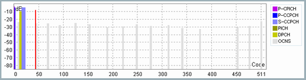

The code domain diagram provides a graphical overview of all active physical channels configured via the channel table including active OCNS channels. Exceptions are P-SCH and S-SCH. The two synchronization channels are not displayed, as they are not channel coded.
To show or hide the CDP diagram, see "Code Domain Diagram".

The diagram displays 1 bar per channel. The X-axis displays the code numbers occupied for spreading factor 512. Channels with smaller spreading factor occupy several code numbers in this representation. Example: A channel with spreading factor 128 and code number 5 occupies channel numbers 20 to 23 of spreading factor 512. This positioning is a direct result of the code tree structure, see "Channelization Codes".
The example diagram above is based on the channel configuration listed in the following table. The column "Code Number Range" lists the code numbers occupied for spreading factor 512. They are calculated from the columns "Spreading Factor" and "Code Number" to facilitate the identification of the individual channels in the example diagram.
Channel | Spreading Factor | Code number | Code number range (SF=512) | Level in dB |
|---|---|---|---|---|
P-CPICH | 256 | 0 | 0 to 1 | -3.3 |
P-CCPCH | 256 | 1 | 2 to 3 | -5.3 |
DPCH | 128 | 3 | 12 to 15 | -10.3 |
PICH | 256 | 22 | 44 to 45 | -8.3 |
S-CCPCH | 64 | 2 | 16 to 23 | -5.3 |
OCNS (R99), 16 channels1) | 128 | 2, 11, 17, ... | 8 to 11, 44 to 47, 68 to 71, ... | -24.3, -26.3, -26.3, ... |
Note 1) For details see "Orthogonal Channel Noise Simulator (OCNS)" | ||||
When several channels occupy the same code numbers, this code conflict is indicated in the diagram as follows: the overlapping parts of the conflicting bars are marked red. The displayed power level in this area represents the sum of the power levels of the conflicting channels. In the example above the PICH conflicts with the second OCNS channel.